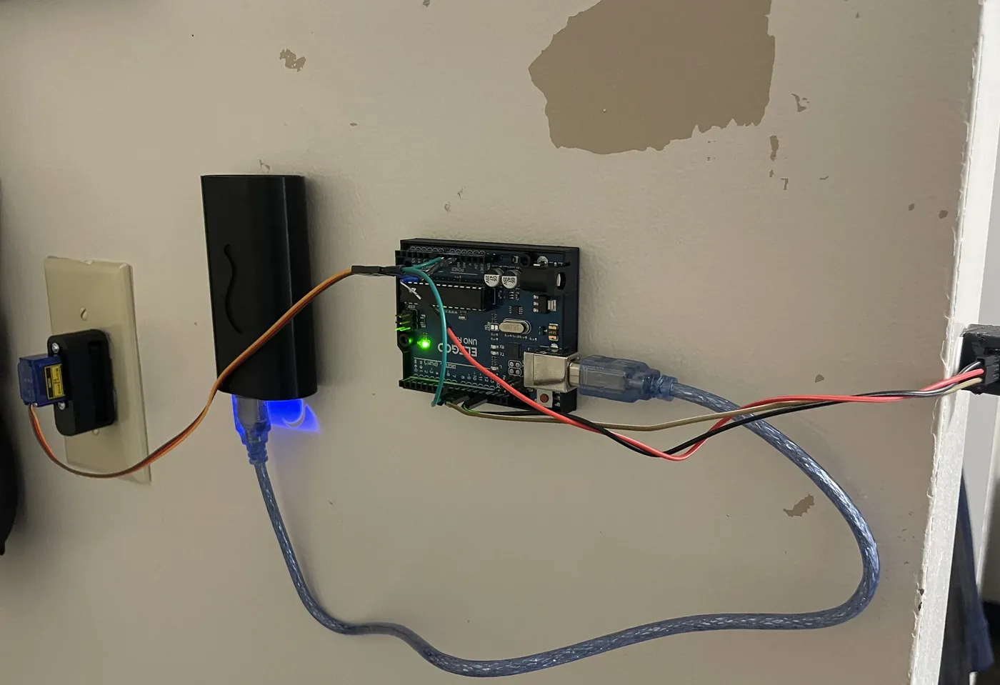
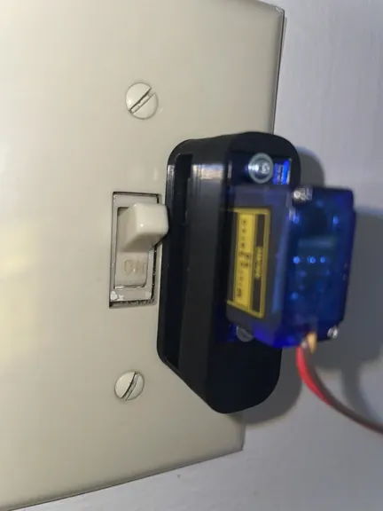
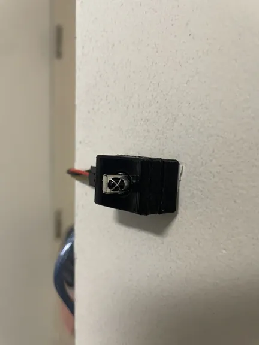
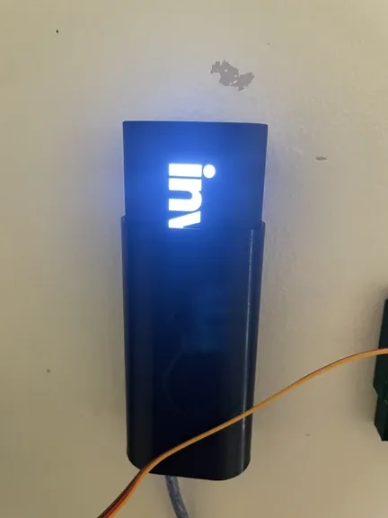

Personal project
Remote light switch
A servo unit that flips my bedroom light switch from an IR remote, and comes off without a trace.
- My role
- Solo, mechanical, electrical and firmware
- Tools
- Onshape, C++, IR, servo, heat-set inserts
- 99%
- flip success
- 3 days
- battery life


Why I built it
I got tired of getting out of bed to turn the light off. This servo unit sits over a normal wall switch and flips it when it gets a signal from an IR remote. I did the mechanical, electrical and software sides myself.
How
- Sized the servo and battery with basic dynamics and power calculations.
- An IR receiver takes commands from the remote, and a microcontroller turns them into servo motion.
- Designed the housings in Onshape with heat-set inserts for fastening, and soldered the electronics.
- Wrote all of the control code in C++.






Results
- Flips the switch correctly 99% of the time.
- The battery lasts about 3 days.
- You can still flip the switch by hand, and it comes off without leaving a mark, which matters in a rental.